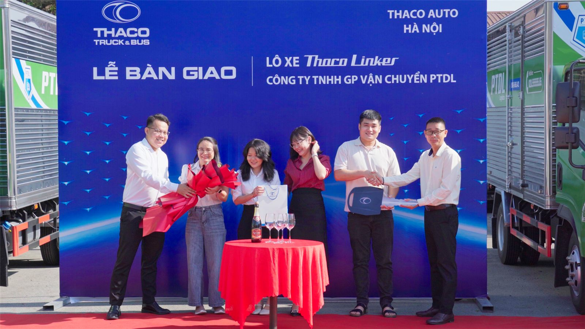

Trong không khí trang trọng và đầy hứng khởi, Công ty TNHH CP Vận chuyển PTDL đã chính thức tiếp nhận lô xe tải Thaco Linker do THACO AUTO bàn giao. Sự kiện đánh dấu một bước tiến quan trọng trong chiến lược nâng cấp đội xe vận tải, tối ưu năng lực khai thác và đáp ứng nhu cầu vận chuyển ngày càng tăng của khách hàng trên toàn quốc.
Nâng Tầm Năng Lực Vận Tải – Tối Ưu Chất Lượng Dịch Vụ
Lô xe Thaco Linker phiên bản mới được THACO AUTO thiết kế theo tiêu chuẩn hiện đại, tiết kiệm nhiên liệu, độ bền cao, vận hành mạnh mẽ và an toàn tuyệt đối. Dòng xe nổi bật với:
- Động cơ mạnh mẽ – tiết kiệm nhiên liệu
- Khung gầm chắc chắn, tải trọng tối ưu
- Khoang lái thoải mái, trang bị công nghệ hỗ trợ lái an toàn
- Thùng xe được thiết kế chuẩn hóa theo nhu cầu vận chuyển của PTDL
Việc đầu tư thêm lô xe mới giúp PTDL gia tăng năng lực phục vụ, đảm bảo hàng hóa được vận chuyển nhanh hơn – an toàn hơn – đúng cam kết thời gian.

Không Khí Trang Trọng Tại Buổi Bàn Giao
Tại sự kiện, đại diện THACO AUTO Hà Nội đã trao chìa khóa biểu trưng và bộ tài liệu xe cho ban lãnh đạo PTDL. Buổi lễ diễn ra trong không khí hợp tác thân tình, thể hiện sự tin tưởng giữa hai doanh nghiệp.
Hình ảnh khu vực bàn giao được bố trí chuyên nghiệp với:
- Hàng xe Thaco Linker mới đồng loạt xếp thẳng hàng, mang sắc xanh đặc trưng của PTDL.
- Banner sự kiện “Lễ Bàn Giao – Lô Xe Thaco Linker – Công Ty TNHH CP Vận Chuyển PTDL” nổi bật trên nền xanh thương hiệu của THACO.
- Đại diện hai bên thực hiện nghi thức ký nhận và chúc mừng khởi đầu hợp tác mới.

Khẳng Định Sự Hợp Tác Bền Vững Giữa PTDL & THACO
Đại diện PTDL cho biết:
“Việc lựa chọn Thaco Linker là một bước đi chiến lược nhằm đồng bộ hóa chất lượng đội xe, nâng cao hiệu suất khai thác và mang đến trải nghiệm dịch vụ tốt nhất cho khách hàng. Chúng tôi tin tưởng vào chất lượng xe THACO cũng như dịch vụ hậu mãi chuyên nghiệp mà nhà sản xuất cam kết.”
Về phía THACO AUTO, đại diện cũng cam kết tiếp tục đồng hành, hỗ trợ kỹ thuật và cung cấp dịch vụ bảo dưỡng – bảo hành theo đúng tiêu chuẩn.
PTDL – Sẵn Sàng Mở Rộng Quy Mô & Chinh Phục Những Tuyến Vận Tải Mới
Sự kiện bàn giao lô xe Thaco Linker không chỉ đánh dấu bước đầu tư quan trọng trong năm, mà còn là tiền đề để PTDL tiếp tục mở rộng quy mô hoạt động, gia tăng năng lực cạnh tranh và phục vụ tốt hơn các đối tác, khách hàng trên toàn quốc.
PTDL sẽ tiếp tục phát triển đội xe với tiêu chí an toàn – hiệu quả – chuyên nghiệp, đồng hành cùng doanh nghiệp trên hành trình vận chuyển hàng hóa mọi miền đất nước.

Lễ bàn giao lô xe Thaco Linker là minh chứng cho sự hợp tác bền vững giữa PTDL và THACO AUTO, đồng thời khẳng định quyết tâm của PTDL trong việc nâng cao chất lượng dịch vụ vận tải. Với đội xe mới, PTDL tự tin mang đến giải pháp vận chuyển nhanh chóng, an toàn và tối ưu cho mọi khách hàng.